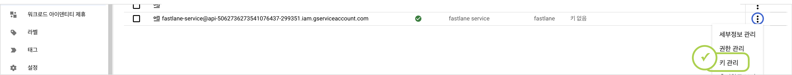
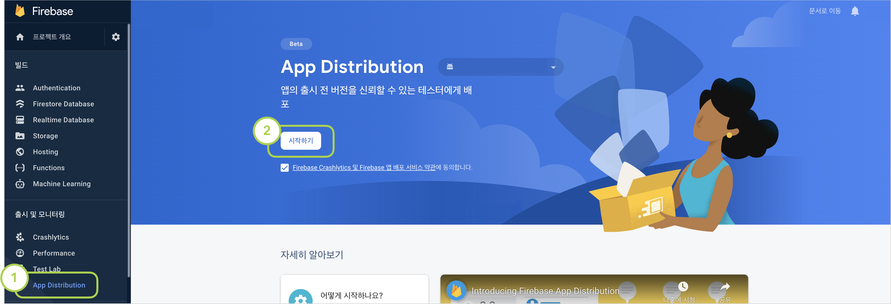
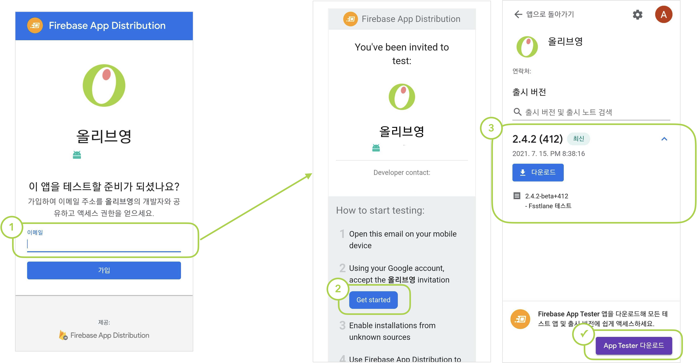

그냥 테스트 한번 해보기
니들은.. 수동배포 같은거 하지마라.. 😎
2021-07-15 21:28
올-하! 💚 안녕하세요. 여러분! 올리브영에서 모바일 앱 개발을 담당하고있는 개발요정🧚♀️ 입니다. 오늘은 올리브영 안드로이드 Android 테스트앱에 자동배포 프로세스를 적용한 이야기를 해보려고합니다.
👉 세줄요약부터.
본론부터 말하는거 좋아하는 성격급한 저같은 분이 계실것같아서, 3줄요약 먼저 준비해봤습니다. ^^
- 올리브영앱 자동배포 적용 성공했고 ✨
- Firebase App Distribution + fastlane 조합으로 했다. ♻️
- 아직도 수동배포하는 곳이 있다면 핵 쉬우니까 다들 빨리 적용 바람. 🏃
👇👇👇 왜 적용하게 되었는지, 어떻게 적용했는지 궁금하시다면 고고! 👇👇👇
📢 테스트앱 올라갔어요!
올리브영 Android 앱은 PlayStore Beta로 테스트앱 관리를 하고 있어요. feature 단위 건의 개발이 완료되면 버전별로 테스트 앱을 배포하고 QC를 진행하는 방식입니다. 사실 가장 기본적인 방법일 수도 있는데요, 이 방법에는 몇가지 비효율적인 부분들이 있었습니다.
1. 테스트앱을 제공하는데 너무 많은 시간이 걸린다.
개발이 완료되면 앱을 빌드한뒤 업로드해야합니다.
우선 PlayStore에 2차 인증을 거친 로그인을 해야하고 (제일 귀찮아요), 적당한 릴리즈노트와 함께 앱을 업로드하면, 앱파일을 첨부하는데 일정 시간을 소요한뒤에 앱을 제출할 수 있습니다.
업로드가 완료되면 바로 제공되는 것도 아닙니다.
약 30분의 ‘출시준비중’ 단계를 대기한 후에 테스터들에게 앱이 제공됩니다.
2. 앱이 제공되고나면 QA엔지니어에게 직접 알려야한다.
앱이 제공되고나면 QA엔지니어에겐 누가 알려줄까요? That’s Me..^^.. 🧚♀️ 앱 업로드 후 30분동안 ‘출시준비중’ 상태를 뺑글뺑글 도는 것을 지켜보다가, 출시가 완료되면 QA엔지니어에게 호다닥 달려가서 알립니다. (호외요 호외~)
3. 테스터가 추가될때마다 일일이 추가해야하고, 오랫동안 기다려야한다.
신규 테스터를 추가하기 위해서는, (1) 플레이스토어 계정을 전달받아야하고 (2) 전달받은 계정에 수기로 권한을 등록해야합니다. (3) 권한을 획득한 테스터는 플레이스토어에서 ‘베타 참여하기’ 버튼을 누른 뒤 (4) 약 4시간을 기다려야 테스트앱을 다운받을 수 있습니다.
4. 이전 버전을 테스트할 수 없다. 한번에 1개의 버전만 테스트가 가능하다.
그나마 TestFlight는 ‘이전 빌드 보기’통해 과거 버전의 앱도 설치할 수 있어서, iOS는 이 방법으로 기능별 버전을 분리해서 QC를 진행하고 있습니다. 그러나 플레이스토어는 가장 최신 버전의 앱만 제공할 수 있어 동시다발적으로 여러개의 QC를 태울땐 항상 난감합니다. 또 프로덕트에 앱이 출시되고나면, 자연스레 Beta에 등록된 앱이 이전 버전이 되면서 무효화 되기 때문에 Beta앱을 또 다시 빌드해서 등록해주어야합니다. 안 그래도 챙겨야할게 한두개가 아니라 바쁜 배포날.. 또 하나의 배포 태스크인셈이죠..
🤷 왜 fastlane일까?
이러한 이유들로, 배포툴 변경과 배포 자동화에 대해서는 사실 꽤 오래전부터 계획되어 왔었습니다. 자동화를 위한 툴은 꽤 여러가지가 있는데요, 보통 Bitrise나 fastlane을 가장 많이 사용하는 것 같습니다. 올디브는 왜 그 많은 툴중에 fastlane으로 선택했을까요?
사실 Bitrise를 쓰고싶었어요.
돈, 사랑, 명예.. 그것보다 중요한 보안..! 네 그렇습니다. 올디브는 사내 보안을 위해 내부망에서만 접근가능한 self-hosted 환경의 Git을 사용중입니다. 처음에는 올디브 Git이 내부망에서만 가능하다는 사실을 잊은채, Bitrise가 self-hosted 환경까지 지원하니 당연히 될거라고 생각했습니다. 열심히 셋팅하는데 자꾸 프로젝트를 못 찾아오길래 ‘왜이러지(ㅠㅠ)’하며 삽질하고 있었는데.. 예.. 내부망.. 네.. Bitrise는 이렇게 처참히 실패했습니다.
🧚♀️: 마젤토브 힘내봐.. 마젤토브 빌드해봐..
🤖: (뭐래..)
Android도 iOS만큼 fastlane과 궁합이 괜찮을까?
iOS 개발자라면 너무나 익숙한 fastlane…
올리브영 iOS앱은 Android보다 한걸음 빠르게 fastlane 적용을 검토중에 있었는데요, Android + fastlane 조합도 괜찮을까 반신반의하며 서치해봤습니다.
사실 QA엔지니어들의 접근성을 위해 Firebase Distribution으로 테스트앱을 제공하자는 목표가 1차적으로 설정되어 있었고,
그 과정에서 Firebase의 공식 document에서조차 fastlane + Firebase Distribution 조합을 추천하는 것을 보며 시험삼아 적용했다가 만족하게 되어 최종적으로 채택하게 되었습니다.
특히 지난 프로젝트인 ‘인마이백’에서 코드푸시로 앱을 배포했던 경험이 있었던지라 코드푸시와 유사한 구동방식이 마음에 들었습니다.
익숙함 + 편리함 + 적용하기쉬움 등등이 한몫 했던 것 같아요. 구관이 명관
🎬 본격적인 적용기!
🏃 이제 적용해보자!
자 이제 플랫폼 검토가 끝났으니 적용을 할 차례입니다. Firebase 공식문서인 Distribute Android apps to testers using fastlane을 많이 참고해서 쉽게 적용할 수 있었습니다.
1. Google 자격증명 획득
서비스 연동을 위해 API키를 생성하고 Google PlayStore에 등록해줘야합니다.





2. Firebase App Distribution 활성화

3. fastlane 설치
macOS 기준으로 fastlane 설치하는 방법을 설명합니다. 터미널에서 하기 명령어를 실행하여 fastlane을 설치합니다.
$ brew install fastlane
프로젝트 경로로 이동하여, fastlane을 초기화해줍니다. 해당 과정에서 패키지명과 위 사전작업 단계에서 설정한 JSON 파일 경로를 입력하게 됩니다.
~/workspace$ fastlane init
(옵션) fastlane이 정상 설치 되었는지 확인하려면 아래 명령어를 입력해줍니다.
~/workspace$ bundle exec fastlane test
4. fastlane과 Firebase App Distribution 연결
fastlane을 Firebase App Distribution과 연결해줍니다.
~/workspace$ fastlane add_plugin firebase_app_distribution
하기 명령어를 입력하여 인증을 위한 Google Auth URL을 받아옵니다.
~/workspace$ bundle exec fastlane run firebase_app_distribution_login
> Open the following address in your browser and sign in with your Google account:
> https://accounts.google.com/o/oauth2/auth....
터미널에서 출력된 페이지 URL을 브라우저로 실행하여 인증한 뒤, 반환되는 인증코드를 콘솔에 입력하면 Refresh Token이 발급됩니다. 해당 토큰을 환경변수로 설정해줍니다.
$ export FIREBASE_TOKEN={token}
5. 배포 lane 설정
마지막으로 배포를 위한 lane 명령어를 생성합니다.
workspace의 ./fastlane/Fastfile 파일을 열어 하기 블록을 추가해줍니다.
...
desc "Lane for distribution"
lane :distribute do
gradle(
task: "assembleDevelop",
build_type: "Release"
)
firebase_app_distribution(
app: "(Firbase App ID)",
groups_file: "fastlane/testers-groups.txt",
release_notes_file: "fastlane/release-notes.txt",
debug: true
)
end
각 설정값 별 상세 옵션은 Firebase App Distribution - 3단계: Fastfile 설정 및 앱 배포 문서에서 확인하실 수 있습니다. 올리브영앱은 각 테스터들 그룹을 만들고, 해당 그룹의 정보가 위치한 txt 파일을 바라보도록 설정했습니다. 릴리즈노트도 이런식으로 작성하면 관리에 더 용이합니다.
🚀 배포 시작
실행
이제 번거로운 빌드-업로드-배포-확인요청 4단계를, 단 한줄만으로 완료할 수 있습니다!
$ fastlane distribution
# 만약 gradle permission dined 오류가 발생한다면 하기 명령어로 권한 부여 후 재시도 해줍니다.
~/workspace$ chmod +x gradlew
👾 테스터 추가
이제 마지막으로 테스터들을 추가할 차례입니다! 일일이 메일계정을 취합받아서 등록하는 방법과, URL을 통해 직접 참여할 수 있도록 유도하는 방법이 있습니다. 수동업무를 줄이기 위해 적용하고 있는만큼, 당연히 후자 방법인 URL을 통해 직접 참여할 수 있도록 진행해보겠습니다. (다 끝나갑니다! 💦)

💁 QA 엔지니어 초대
위에서 만든 링크를 이제 QA 엔지니어들에게 전달하기만하면됩니다. QA 엔지니어는 링크를 통해 테스트앱을 설치할 수 있어요. 이때, ‘App Tester’라는 앱을 설치하면 향후에도 계속 편하게 테스트앱을 받아볼 수 있습니다. 
💚 적용이후 달라진 점
일단 개발자도, QA엔지니어도 모두 편해졌습니다. 🤝
자동응답기마냥 주고받던 대화를 나눌일이 없어져서, 대화할일이 사라졌어요.

다음에는 CI까지 적용해서 완벽한 CI/CD 적용기로 찾아뵙겠습니다! 점점 더 발전해나가는 올리브영앱을 많이 찾아주세요! (구매는 올리브영앱에서! 💚)